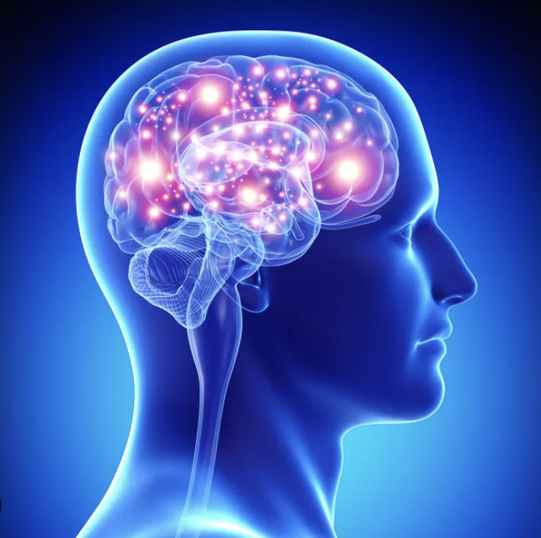

What are the cognitive skills?
Cognitive skills are the brain's core mental abilities used to think, read, learn, remember. They are what your mind uses to process information, interact with the world, and solve problems.

Cognitive skills are the brain's core mental abilities used to think, read, learn, remember. They are what your mind uses to process information, interact with the world, and solve problems.

Physical Activity supports both body and your mind, research has also shown that physical activity improves learning ability, memory, decision making etc.
Getting 7-8 hours of sleep each night can help preserve attention, memory and decision making
Eating food that support your physical health also suppports your brain. Balanced diets with a range of protein, fat, and carbohydrates are important
Different hobbies excerise different cognitive muscles, people who play chess for example has better problem solving skills and increased attention span, while people who crochet or knit has better fine motor coordination.
Learning new things helps your brain build new connections and grow stronger over time. It boosts memory, problem solving, mental flexibility, and may even protect against decline as you age. The more challenging the thing you're learning, the greater the benfits you get
topic2
topic3